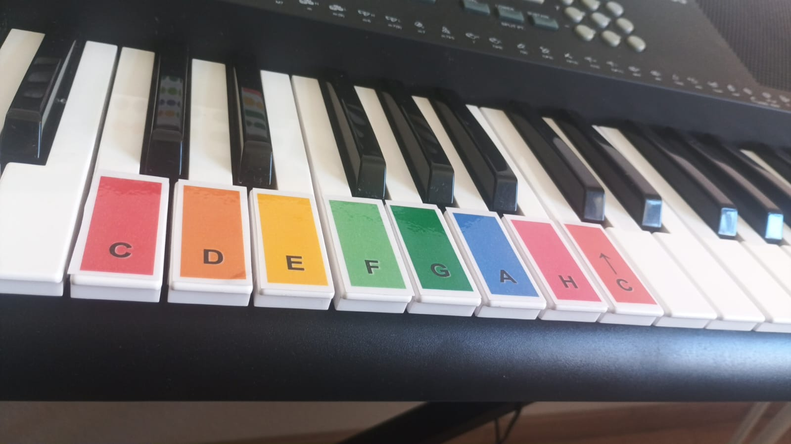

Worum geht es bei dem Projekt?
Farbmelodien wurde entwickelt, um die Barrieren des traditionellen Notenlesens zu durchbrechen. Es ist so konzipiert, dass Kinder, Anfänger und Pädagogen von der ersten Minute an musizieren können.
Anstelle der klassischen Notenlinien verwenden wir eine riesige grafische Partitur, in der jede Note eine bestimmte Farbe und jeder Rhythmus eine leicht verständliche Form hat.
Die Farbskala
Jeder Musiknote ist eine Standardfarbe zugeordnet, um sie auf jedem kompatiblen Instrument (wie Xylophonen oder farbigen Keyboards) schnell zu erkennen. Höhere Töne (eine Oktave höher) werden durch einen kleinen Pfeil nach oben (↑) markiert.
Einzelne Kreise
Nehmen exakt einen Platz im Kästchen ein (Viertelnote).
Geteilte Kreise
Zwei Töne, die sich einen Platz teilen (Achtelnoten).
Verbundene Kreise
Nehmen 2 oder 4 Plätze ein (Halbe / Ganze Note).
Graue Kreise
Ein grauer Kreis bedeutet einen Platz Pause (Stille).
Der visuelle Rhythmus
Das System übersetzt die Musiktheorie in sichtbare Bausteine: Die Grundbreite eines Platzes entspricht exakt einem Schlag. Verbundene Kreise nehmen einfach den Platz von mehreren Schlägen ein.
Die Partituren sind in gepunkteten Kästchen (Takten) gruppiert. Jedes Kästchen beinhaltet exakt 4 Plätze (einen 4/4-Takt). Dies hilft, das Rhythmusgefühl räumlich und ganz natürlich zu verinnerlichen.
Ideal für Kinder
Fördert die kognitive und motorische Entwicklung durch die frustfreie Verknüpfung von Farben, Formen und musikalischen Klängen.
100% Praxisnah
Sobald du eine Partitur öffnest, kannst du sofort spielen. Perfekt für Musikglocken, Boomwhackers oder Keyboards.
Unterstützung für Lehrkräfte
Ein hervorragendes kostenloses digitales Werkzeug für Musiklehrer in der frühkindlichen und schulischen Bildung.
Die Schritte
Schritt 1: Vorbereitung des Instruments
Das erste pädagogische Ziel ist es, die Farbskala mit dem Aufkleber-Generator in die reale Welt zu übertragen. Dieses Werkzeug ermöglicht es, Breite, Höhe und weißen Abstand in Millimetern einzustellen, um eine druckbare Aufklebervorlage zu erstellen, die perfekt an die Tasten deines Klaviers oder Xylophons angepasst ist.
Durch das Anbringen dieser Farben — wie das C in Rot, G in Dunkelgrün oder das hohe C mit einem Pfeil nach oben — beseitigen wir die Barrieren der traditionellen Notenschrift und schaffen eine sofortige visuell-motorische Verbindung für den Lernenden.

Schritt 2: Praxis und Festigung
Sobald die Umgebung vorbereitet ist, wechseln wir zur Lieder-Galerie. In dieser Phase nutzt der Schüler grafische Partituren bekannter Lieder, bei denen jede Note ein farbiger Kreis ist und jedes gepunktete Kästchen einen 4/4-Takt darstellt.
Diese Praxis garantiert aktives Musizieren ab der ersten Minute, fördert die Motivation, reduziert Frustration und festigt das chromatische Lesen.
Schritt 3: Kreativer Ausdruck
Der Höhepunkt des Lernprozesses ist das Komponieren mit dem Melodie-Ersteller.
- Die Kinder wählen die Taktart (3/4 oder 4/4), die Notenlänge und den Klang (Klavier oder Glocke).
- Durch Klicken auf die grauen Kreise der Leinwand malen sie ihre eigenen chromatischen Sequenzen und können den Kreis sogar visuell teilen, um Achtelnoten zu erstellen.
- Schließlich können sie ihr Werk abspielen, in einem lokalen Ordner speichern oder als Bild herunterladen, um es zu teilen.